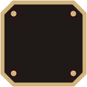
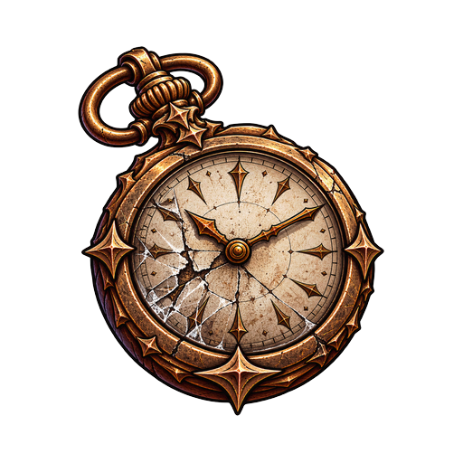
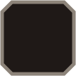
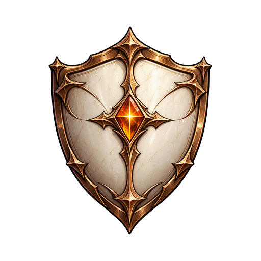
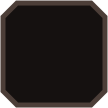
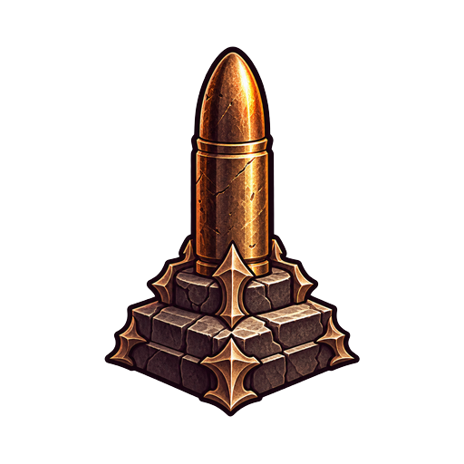
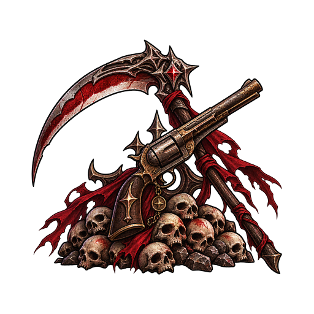
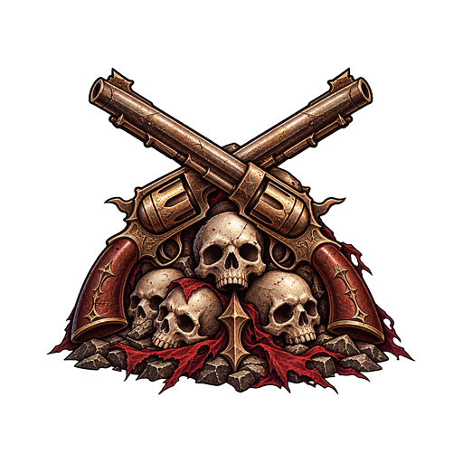
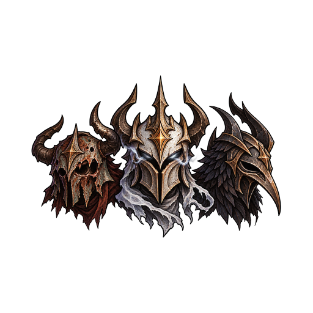
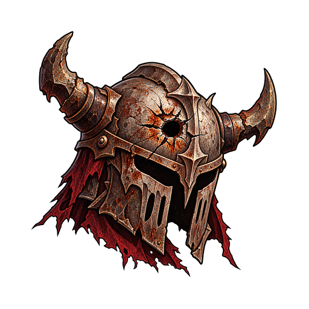

BAŞARIMLAR
31 / 53kademe

WATCH
CULLING
CROWNED
ARMORY
ROAD
THE WATCH5 / 10


IIHAYATTA KALMA
Tek koşuda 15 dakika hayatta kal.
13:32/15:00


IDOKUNULMAZ
Tek koşuda 5 dk hasar almadan kal.
4:01/5:00


NÖBET
Toplam 1 saat oyna.
40 dk/1 sa
THE CULLING7 / 15

IIÖLDÜRME
Toplam 5.000 düşman öldür.
2.940/5.000

IKIRIM
Tek koşuda 1.000 düşman öldür.
812/1.000
THE CROWNED3 / 8

IÜÇ ELİT
Tüm kademeler açıldı. 23.10.2026
TAMAM

BOSS AVCISI
Bir boss'u devir.
0/1
GERİ
kroniği şeridi: 5 mühür (dokun → gruba kay) · kademe sayısı 31/53
sticky grup başlığı + ayraç + açılan/toplam
satır 936×150: plaka(≤108)+ad+tek satır hedef+değer/segmentli çubuk
plaka: çerçeve silüeti + Roma rozeti + baklava
4 eşik çentikli çubuk
GERİ y2196